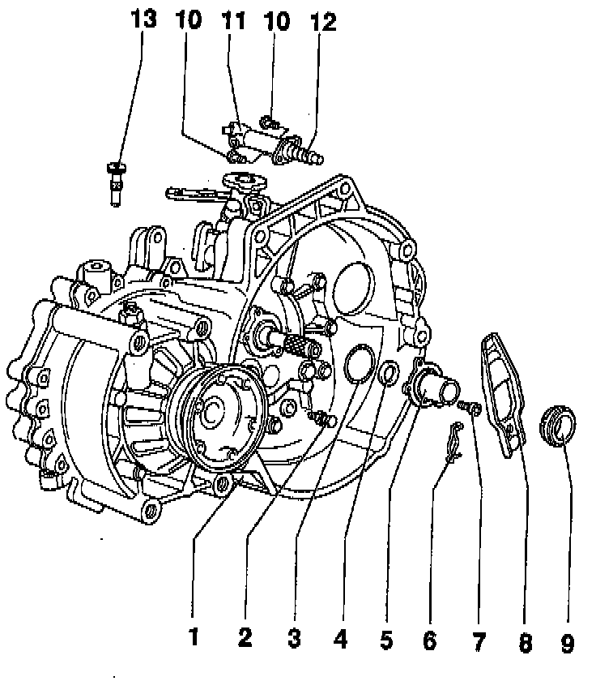
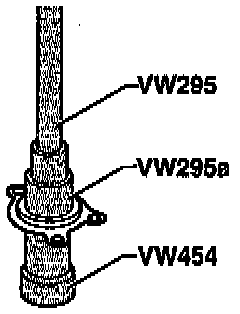

Clutch Slave Cylinder: Service and Repair

COMPONENT NOTES AND INFORMATION
1 Transmission
2 Ball stud
- Tighten to: 25 Nm (18 ft lb)
- Lubricate with MoS2 grease
3 O-ring
- Always replace
4 Input shaft oil seal
- Removing, refer to Fig. 1, below
- Installing, refer to Fig. 2, below
5 Guide sleeve
- Lubricate with MoS2 grease in area of release bearing
6 Retaining spring
- Attach to clutch release lever
7 Mounting bolt
- Tighten to: 20 Nm (15 ft lb)
8 Clutch release lever
9 Release bearing
- DO NOT wash bearing (wipe off instead)
- Replace noisy bearings
- Lubricate surfaces that contact clutch release lever with MoS2 grease
10 Mounting bolt
- Tighten to: 20 Nm (15 ft lb)
11 Slave cylinder
- Before removing, remove the following:
- Gear selector cable from transmission gear selector lever, refer to Replacement. Service and Repair
- Relay lever and actuating arm for gate selector cable, refer to shift linkage On Transmission. Service and Repair
- After installing: adjust gear selector mechanism. Adjustments
- Also see Clutch Master Cylinder for additional information on hydraulic system components. Clutch Master Cylinder
12 Push rod
- Lubricate end of push rod with MoS2 grease
13 Assembly pin
- Secures clutch release lever while installing transmission.
- Remove after transmission has been installed
NOTE: A bolt, M8x35, can be used as a substitute if assembly pin -13- is not available.

Fig. 1 Removing oil seal from guide sleeve

Fig. 2 Installing oil seal into guide sleeve
- Drive in to stop.